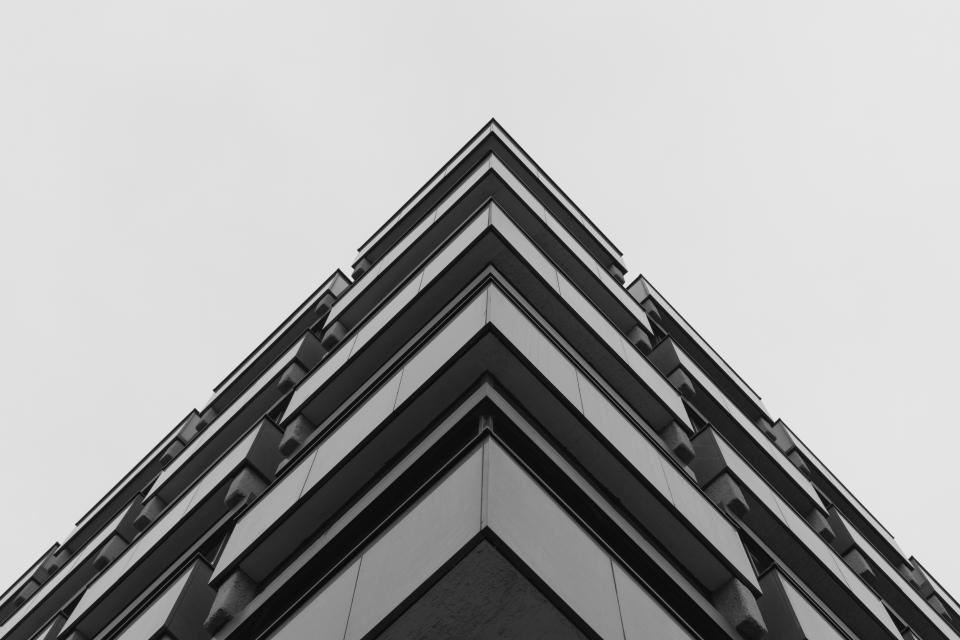
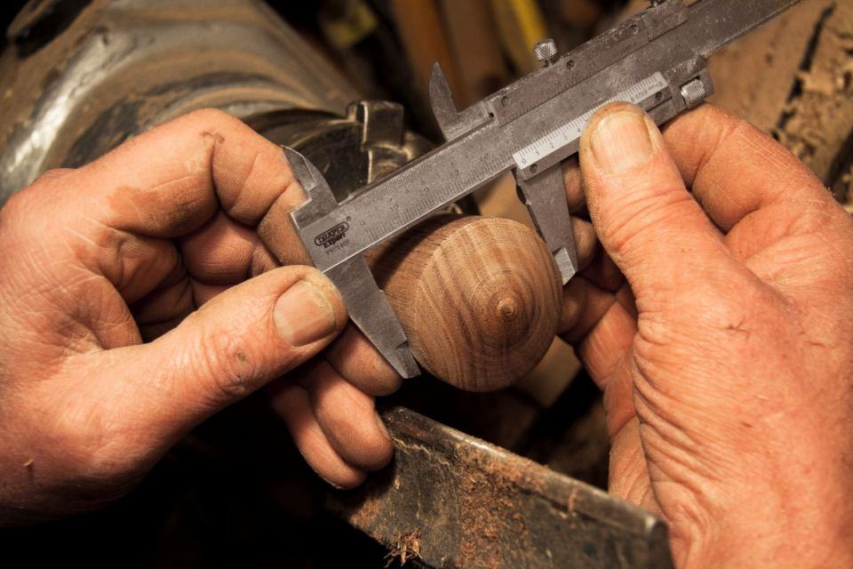

Tjänster
Vi är underentreprenör åt de större byggarna och totalentreprenör när en fastighetsägare vill ha ett betongprojekt i en hand. Egna kranförare, egna formsättare och ett eget armeringslag gör att vi kan hålla en våningscykel på sju arbetsdagar.
Vad ska gjutas?

Stommar för bostäder
Vi gjuter väggar och bjälklag på plats med klätterformar och egna byggkranar. På ett åttavåningshus håller vi en våning i veckan.
Platsgjutet ger täta bjälklag och god ljudisolering mellan lägenheterna, vilket boende märker i tjugo år.

Grund och källare
Plattor, källarväggar och garage under mark, ofta i lera och nära havet. Vi samordnar pålning, dränering och vattentät betong.
Vid grundvatten använder vi vattentät betong med kristalliserande tillsats i stället för utvändig membranmatta.

Betongrenovering
Balkonger, loftgångar och parkeringsdäck från sextio- och sjuttiotalet har ofta rostande armering. Vi utreder, bilar bort skadad betong och gjuter nytt.
Arbetet sker etappvis så att de boende kan bo kvar och bara mister sin balkong i tre veckor.

Industri och logistik
Lagerplattor och golv för truckar, pallställ och tunga maskiner. Vi gjuter upp till 1 200 kvm per dag med laserstyrd avdragning.
Golven lämnas med uppmätt planhet enligt SS-EN 15620 för höglager.
Från anbud till härdningslogg
- 1

Anbud på handlingar
Vi räknar på förfrågningsunderlag inom två veckor och föreslår alternativ som kortar tiden eller sänker klimatpåverkan.
- 2

Gjutplan och recept
Tillsammans med betongleverantören tar vi fram recept och gjutordning efter årstid och härdningskrav.
- 3

Produktion i takt
Formsättning, armering och gjutning i fast cykel, med temperaturgivare i varje gjutning för att följa hållfastheten.
- 4

Överlämning med mätdata
Du får härdningsloggar, planhetsmätning och egenkontroller digitalt när stommen lämnas över.
Certifierat för kvalitet, miljö och arbetsmiljö
- ISO 9001 & 14001Ledningssystem för kvalitet och miljö, certifierat av Kiwa sedan 2012.
- ISO 45001Certifierat arbetsmiljösystem med egen skyddsingenjör.
- ID06Passerkontroll och elektronisk personalliggare på alla arbetsplatser.
- Medlem i ByggföretagenKollektivavtal och entreprenader enligt AB 04 och ABT 06.